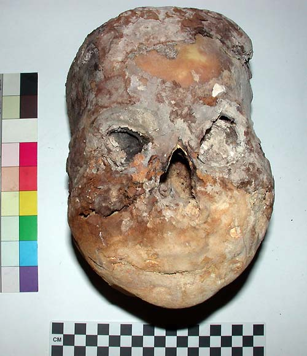

- Home
- Finds home
- Finds by date
- Finds by type
- Conservation
- Slideshow
- Site general
18th dynasty human remains
The likely 18th dynasty shaft in the courtyard of TT99 was excavated in 1997-8, and human remains were located towards the end of the 1998 season, after the departure of our bone specialist, Dr Tony Waldron. Dr Waldron was able to work in the tomb again in the 2002 season, at which point these remains were examined. The 2002 report should be consulted for more details. In summary:
"Shaft I yielded evidence for 5 adults, 3 females and 2 male, and a single juvenile. It is probable that one of the adult males was Senneferi, but unfortunately it is impossible to identify which."
The only person in the burial to whom objects could be attributed was Senneferi, and it is reasonable to assume that two of the adults were Senneferi and his wife Taiamu. As Senneferi mentions his parents Haydjehuty and Satdjehuty frequently in the tomb, I speculate that two of the further mummies are theirs. However, the identity of the other two is a guess--the best I suggest is that they were unmarried children, or other relatives who Senneferi had agreed could be buried in the tomb.
Most of the human remains were badly damaged and had lost most of the evidence of mummification. However, the most intriguing remains were mummified in a particularly elaborate manner, with a thick coating of plaster, and every elaborate bandaging. We had originally wondered if this might be the mummy of Senneferi, from the elaborate mummification. However, examination in the 2002 season revealed that it was female, aged in the region of 50 years. Thus we consider that, as there were two similarly aged couples buried in this tomb, that the person is either Senneferi's wife or mother.
|

|
|
The skull of a woman in her 50s |
© Nigel Strudwick 1997-2016